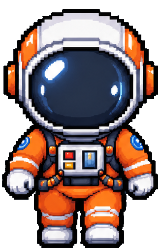

Simulador de producción
de alimentos en la Luna
Prueba independiente · condiciones reportadas
Día de vista previa12
Rescate del invernadero
Cosecha de entrenamiento, no producción física.
Reglas del reto: ±0,5 puntos por canal. Crecimiento y días simulados; no predicen una cosecha real.
Configuración de luz
Ajusta cada canal para el cultivo seleccionado.
Mezcla de referencia
Distribución actual
Selecciona una planta y revisa su escenario.
Efecto esperado
Comparación visual de luz; no predice rendimiento.
Condiciones reportadas en experimentos
No son sensores en tiempo real ni objetivos universalesHumedad relativa
CO₂
Oxígeno
Sin dato confirmadoNo se proporcionó un valor por cultivo.
Bitácora del cultivo seleccionado
Aquí aparecerán los cuidados que registres durante la misión.